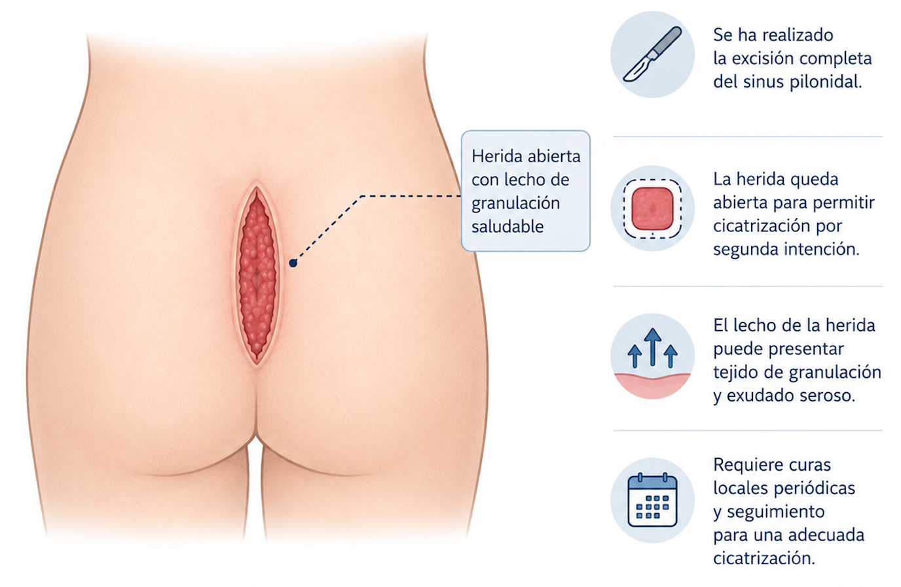

¿Qué es el sinus pilonidal?
El sinus pilonidal es una cavidad o trayecto fistuloso en la región sacrococcígea (hendidura interglútea) que contiene pelo y tejido de granulación. Se origina por la penetración de pelos en la piel, generalmente en personas jóvenes, con frecuencia entre los 15 y 35 años.
Puede manifestarse como un quiste asintomático, un absceso agudo doloroso o una fístula crónica con supuración intermitente. Sin tratamiento, tiende a recurrir y a complicarse.
Dato clave: la cirugía abierta tradicional requiere semanas de recuperación con la herida abierta y curas diarias. La técnica GIPS resuelve el problema mediante pequeñas incisiones con recuperación en días y reincorporación laboral rápida.
Síntomas del sinus pilonidal
- Dolor en la zona sacrococcígea al sentarse o al caminar
- Inflamación y enrojecimiento en la hendidura interglútea
- Supuración de líquido o pus de forma intermitente
- Absceso agudo — colección de pus dolorosa que puede requerir drenaje urgente
- Fístula crónica — orificio que supura de forma recurrente
- Presencia de pelos visibles en el orificio del sinus
GIPS vs Cirugía abierta tradicional
La diferencia entre ambas técnicas es significativa en cuanto a recuperación, comodidad y resultado estético:

- Herida abierta que cierra por segunda intención
- Curas diarias durante más de 4-8 semanas
- Baja laboral prolongada
- Cicatriz extensa en zona interglútea
- Dolor postoperatorio
- Incisiones mínimas de 3-5 mm
- Recuperación en 3-7 días
- Reincorporación laboral rápida
- Sin cicatriz extensa
- Baja tasa de recurrencia
- Mínimas molestias postoperatorias
¿Cómo es la técnica GIPS?
La técnica GIPS (Glycerine Injection and Pit Picking Surgery) es un procedimiento mínimamente invasivo que combina la eliminación de los orificios del sinus con la inyección de glicerina para destruir el trayecto fistuloso.
Mínimamente invasivo, recuperación rápida
El Dr. Jaime Jorge Cerrudo realiza la técnica GIPS bajo anestesia local en la Clínica de San Pío, sin necesidad de ingreso hospitalario ni anestesia general.
Anestesia local — sin ingreso
Recuperación en 3-7 días
Sin cicatriz extensa
Reincorporación laboral rápida